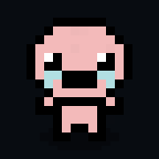

Isaac
OFFLINE WEB APP
准备中
⛶
⚙
设置
正在载入游戏
首次加载需要一点时间
移动
射击
CONTROL CENTER
游戏设置
×
游戏文件仅从当前网页来源读取
操控透明度
48%
0% 完全隐形，但仍可触控
摇杆大小
128
隐藏摇杆
按键位置编辑
恢复默认位置
本页仅访问本站文件；设置保存在本机浏览器。游戏存档由本地运行器保存在本站来源下。
自定义方案
离开
恢复默认
保存
移动
射击
炸弹
卡牌 / 药丸
主动道具
大小
128 px
透明度
48%
正在调整：移动摇杆
▲
◀
▶
▼
选控件后拖动定位；滑杆调大小和透明度，方向键微调。保存后下次自动使用。
↻
请将手机横过来
横屏后显示游戏与双摇杆